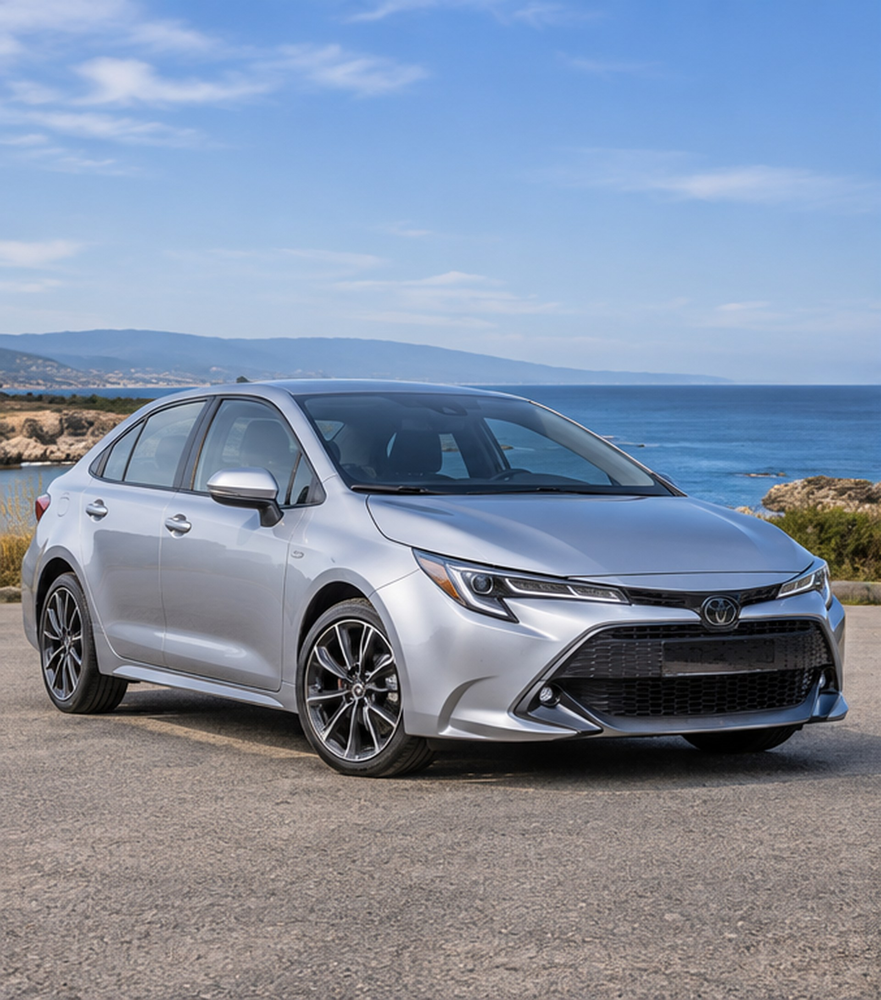
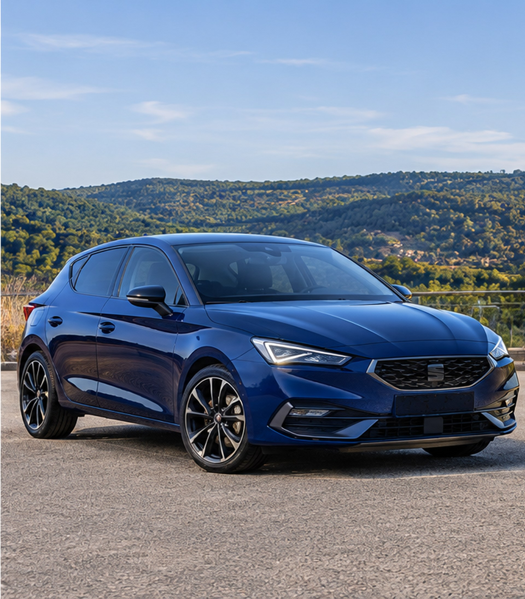
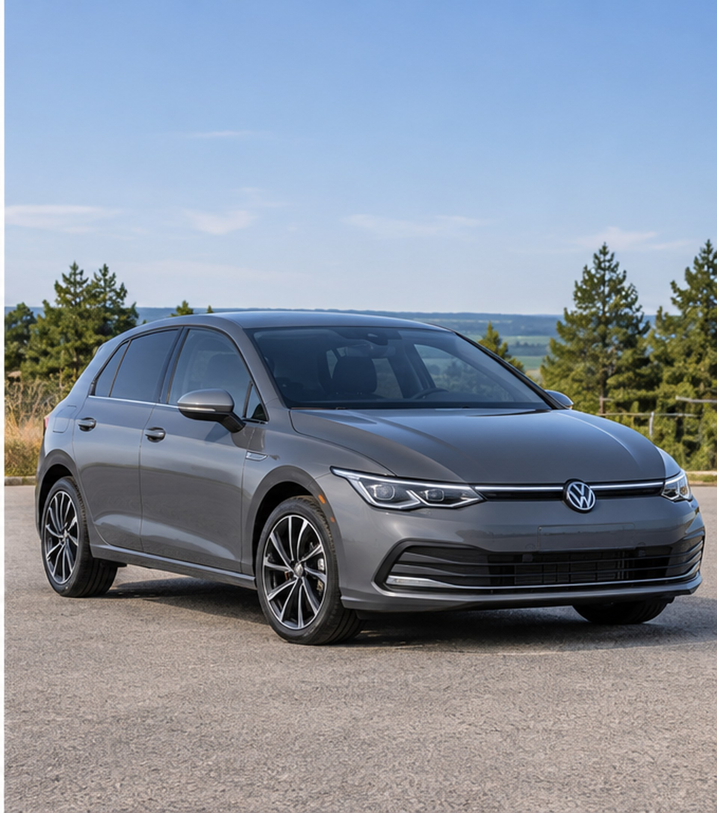

AutoData
Galería de imágenes de vehículos.
Modelos destacados

Toyota Corolla
— modelo destacado de AutoData.

SEAT León
— modelo destacado de AutoData.

Volkswagen Golf
— modelo destacado de AutoData.